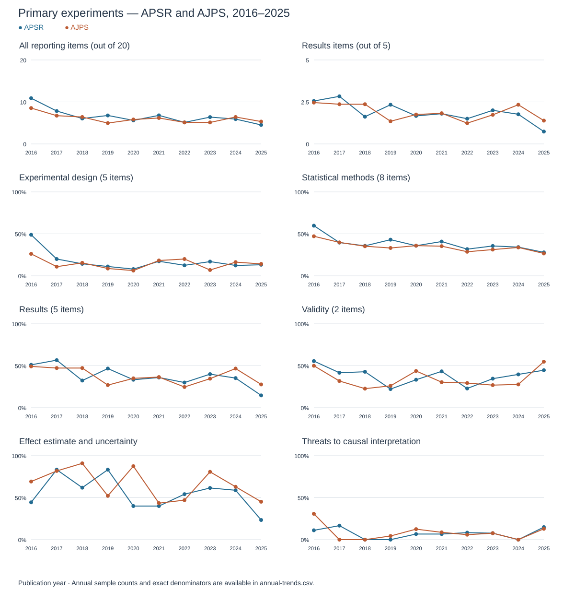
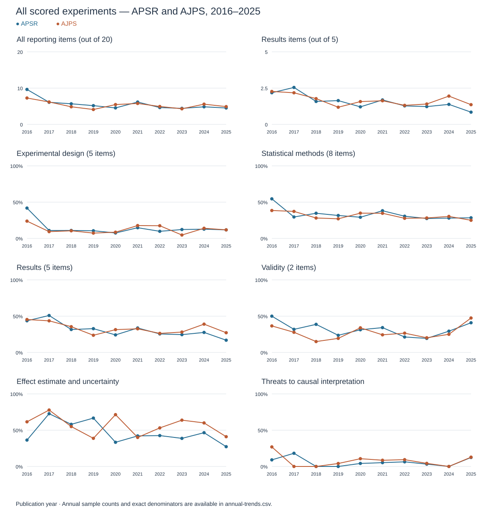

Reporting completeness across journals and designs
Latest 120-paper random sample · Eight reporting measures
The sample contains 34 APSR, 37 AJPS and 26 economics papers. Economics covers AER, QJE, Econometrica, REStud and JPE. Counts below identify papers with experiments included in each analysis.
Primary experiments: journal comparison
| Measure | APSR32 papers · 46 experiments | AJPS34 papers · 55 experiments | APSR and AJPS66 papers · 101 experiments | Economics25 papers · 26 experiments |
|---|---|---|---|---|
| Mean score per experiment | ||||
| All reporting items (out of 20) | 5.9 | 5.8 | 5.8 | 9.7 |
| Results items (out of 5) | 1.7 | 1.9 | 1.8 | 3.5 |
| Percentage of available points earned | ||||
| Experimental design (5 items) | 18.3% | 12.4% | 15.0% | 32.3% |
| Statistical methods (8 items) | 33.2% | 32.0% | 32.5% | 45.7% |
| Results (5 items) | 33.5% | 38.9% | 36.4% | 69.2% |
| Validity (2 items) | 33.7% | 31.8% | 32.7% | 50.0% |
| Percentage fully reporting each item | ||||
| Effect estimate and uncertainty | 43.5% | 69.1% | 57.4% | 84.6% |
| Threats to causal interpretation | 8.7% | 1.8% | 5.0% | 34.6% |
Annual trends, 2016–2025

Annual sample sizes
| Year | APSR: papers / experiments | AJPS: papers / experiments |
|---|---|---|
| 2016 | 2 / 4 | 1 / 1 |
| 2017 | 0 / 0 | 7 / 11 |
| 2018 | 5 / 5 | 3 / 4 |
| 2019 | 2 / 2 | 3 / 7 |
| 2020 | 3 / 4 | 2 / 2 |
| 2021 | 1 / 1 | 3 / 5 |
| 2022 | 3 / 7 | 2 / 2 |
| 2023 | 3 / 3 | 3 / 6 |
| 2024 | 5 / 5 | 8 / 15 |
| 2025 | 8 / 15 | 2 / 2 |
Political science: experiment types
| Measure | List1 papers · 1 experiments | Conjoint8 papers · 17 experiments | Survey46 papers · 77 experiments | Field18 papers · 21 experiments |
|---|---|---|---|---|
| Mean score per experiment | ||||
| All reporting items (out of 20) | 2.0 | 4.5 | 5.1 | 8.2 |
| Results items (out of 5) | 0.0 | 1.6 | 1.7 | 2.2 |
| Percentage of available points earned | ||||
| Experimental design (5 items) | 20.0% | 20.0% | 11.2% | 28.6% |
| Statistical methods (8 items) | 12.5% | 18.4% | 28.7% | 43.5% |
| Results (5 items) | 0.0% | 32.9% | 34.3% | 43.8% |
| Validity (2 items) | 0.0% | 17.6% | 27.3% | 54.8% |
| Percentage fully reporting each item | ||||
| Effect estimate and uncertainty | 0.0% | 23.5% | 54.5% | 71.4% |
| Threats to causal interpretation | 0.0% | 0.0% | 1.3% | 19.0% |
All scored experiments: journal comparison
| Measure | APSR33 papers · 73 experiments | AJPS37 papers · 90 experiments | APSR and AJPS70 papers · 163 experiments | Economics25 papers · 61 experiments |
|---|---|---|---|---|
| Mean score per experiment | ||||
| All reporting items (out of 20) | 5.3 | 5.1 | 5.2 | 6.9 |
| Results items (out of 5) | 1.5 | 1.7 | 1.6 | 2.3 |
| Percentage of available points earned | ||||
| Experimental design (5 items) | 16.2% | 10.2% | 12.9% | 20.7% |
| Statistical methods (8 items) | 30.1% | 29.2% | 29.6% | 37.1% |
| Results (5 items) | 29.0% | 34.2% | 31.9% | 45.2% |
| Validity (2 items) | 30.1% | 27.8% | 28.8% | 29.5% |
| Percentage fully reporting each item | ||||
| Effect estimate and uncertainty | 38.4% | 61.1% | 50.9% | 52.5% |
| Threats to causal interpretation | 6.8% | 1.1% | 3.7% | 14.8% |
Annual trends, 2016–2025

Annual sample sizes
| Year | APSR: papers / experiments | AJPS: papers / experiments |
|---|---|---|
| 2016 | 2 / 5 | 1 / 2 |
| 2017 | 0 / 0 | 8 / 21 |
| 2018 | 5 / 8 | 3 / 9 |
| 2019 | 2 / 3 | 3 / 11 |
| 2020 | 3 / 6 | 2 / 3 |
| 2021 | 1 / 1 | 3 / 6 |
| 2022 | 4 / 12 | 2 / 5 |
| 2023 | 3 / 8 | 3 / 9 |
| 2024 | 5 / 9 | 9 / 21 |
| 2025 | 8 / 21 | 3 / 3 |
Political science: experiment types
| Measure | List2 papers · 4 experiments | Conjoint9 papers · 25 experiments | Survey55 papers · 130 experiments | Field18 papers · 26 experiments |
|---|---|---|---|---|
| Mean score per experiment | ||||
| All reporting items (out of 20) | 4.2 | 4.7 | 4.6 | 8.0 |
| Results items (out of 5) | 0.8 | 1.6 | 1.5 | 2.2 |
| Percentage of available points earned | ||||
| Experimental design (5 items) | 20.0% | 19.2% | 10.2% | 27.7% |
| Statistical methods (8 items) | 31.2% | 21.5% | 26.8% | 41.8% |
| Results (5 items) | 15.0% | 31.2% | 29.7% | 43.8% |
| Validity (2 items) | 0.0% | 24.0% | 25.4% | 51.9% |
| Percentage fully reporting each item | ||||
| Effect estimate and uncertainty | 25.0% | 32.0% | 48.5% | 69.2% |
| Threats to causal interpretation | 0.0% | 0.0% | 0.8% | 19.2% |
Experiments receive equal weight in mean scores. Domain percentages pool points earned over applicable points; item percentages use applicable experiments. N/A is excluded from percentage denominators. Primary selects the model’s Primary role. Design labels overlap. Publication years refer to articles, not experiment field dates.
List, conjoint and survey labels come from the model output. Field labels are separately coded from archived design descriptions and page-linked evidence: Randomized interventions delivered through real-world institutions, services, communications, activities or naturally operating allocation processes. Includes online field interventions and randomized operational procedures. Artificial laboratory tasks, hypothetical vignettes and elicitation-only tasks are excluded.
Descriptive summaries use the 266 individually identified scored experiments in the sample; the data export retains the inventory selection flags. All eight measures use the same prompt and assessment run.